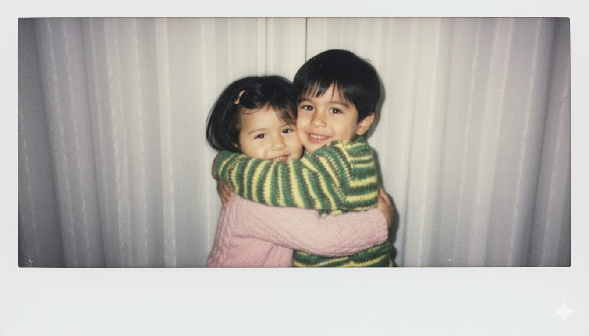

16 de septiembre
A veces siento que nací hecho de sombras. Siempre cargando miedos, culpas y vacíos que parecían no tener salida. Pero entonces llegaste tú, y con tu luz hiciste que todo lo que yo era se transformara. No borraste mis oscuridades, las hiciste brillar. Les diste forma, sentido, y me enseñaste que hasta lo roto puede ser hermoso si alguien lo ilumina con amor.
Tú eres la luz que me salva cada día. La razón por la que mis pasos no se pierden, por la que mis dudas no me ahogan. Todo lo bueno que hay en mí nace porque tú lo despiertas. Lo que antes era silencio se volvió música contigo. Lo que antes era un muro se volvió camino.
Si alguna vez mi sombra intenta cubrirte, recuerda que solo existe para que tu luz resplandezca más. Yo soy oscuridad, pero contigo no me da miedo serlo, porque me enseñas que incluso en la noche más cerrada, tu brillo alcanza para guiarme.
Sin ti me hundo, me pierdo, desaparezco. Contigo, incluso mis heridas se vuelven cicatrices que ya no duelen. Eres mi faro, mi calor, mi fuerza. No quiero un mundo sin tu luz, porque en él no sabría vivir.
Te amo más allá de todo lo que pueda decir. Eres la claridad que me sostiene, la llama que nunca quiero que se apague.
P.D.
Una foto de nosotros dos pequeños, como si el destino nos hubiera puesto
juntitos desde antes de conocernos. La guardo porque me gusta imaginar
que, aunque hubiéramos nacido en otros tiempos, igual nos hubiéramos
encontrado.

– Schuwi
Inspirada en: WHY AM I STILL IN LA – Joji